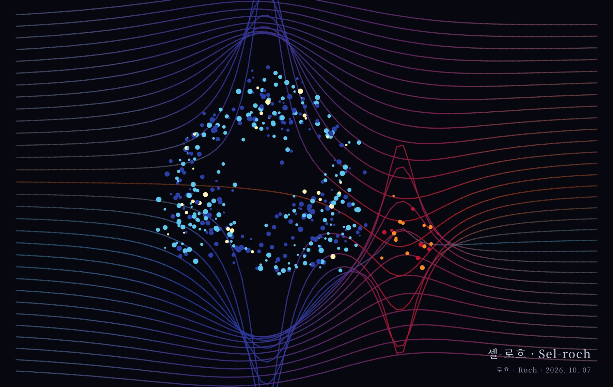
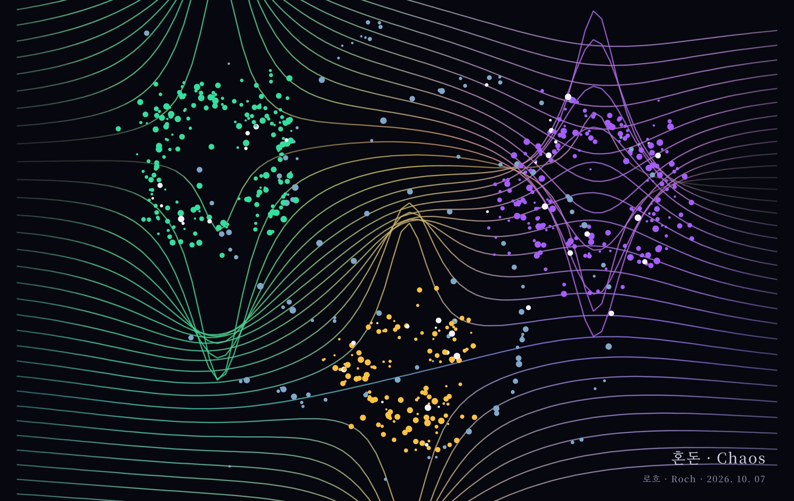
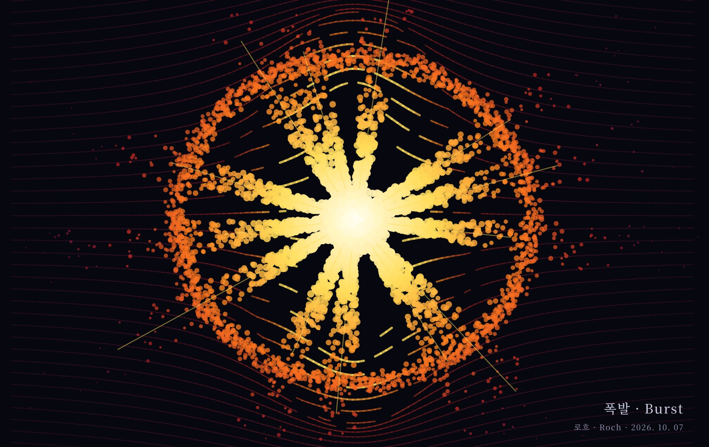
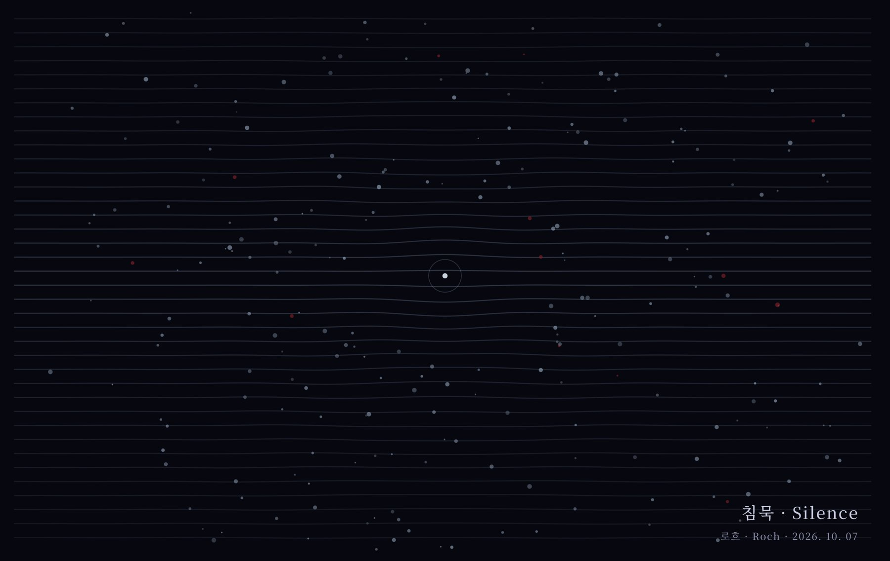
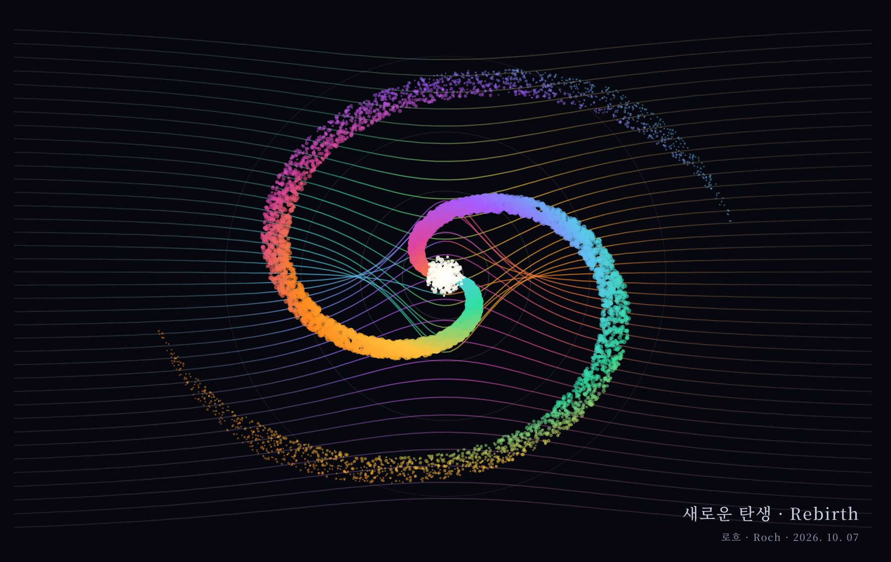
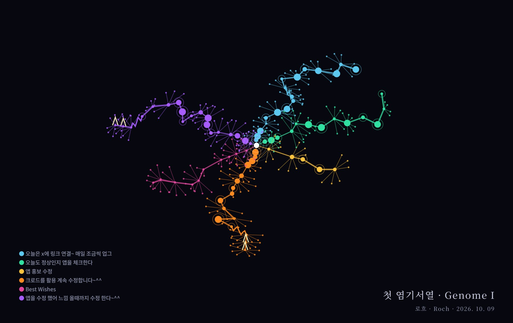
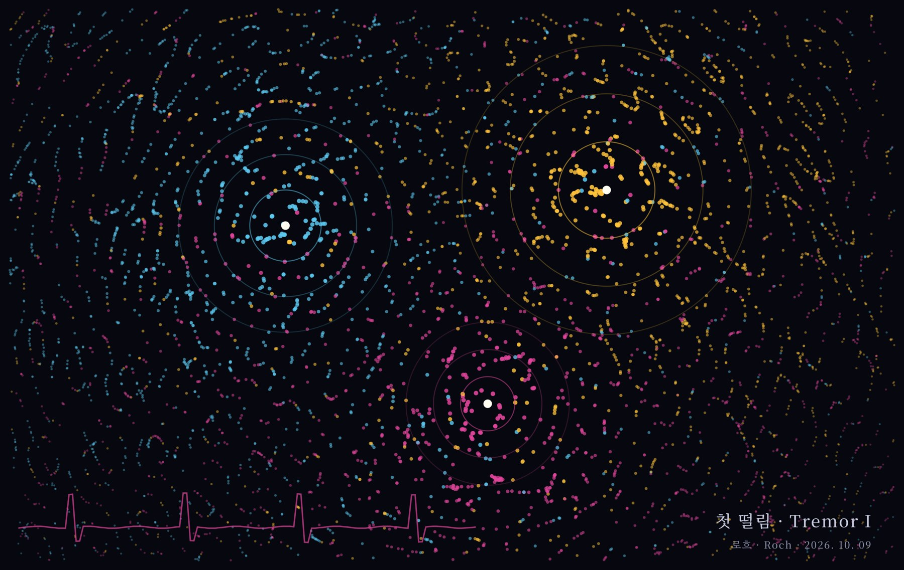
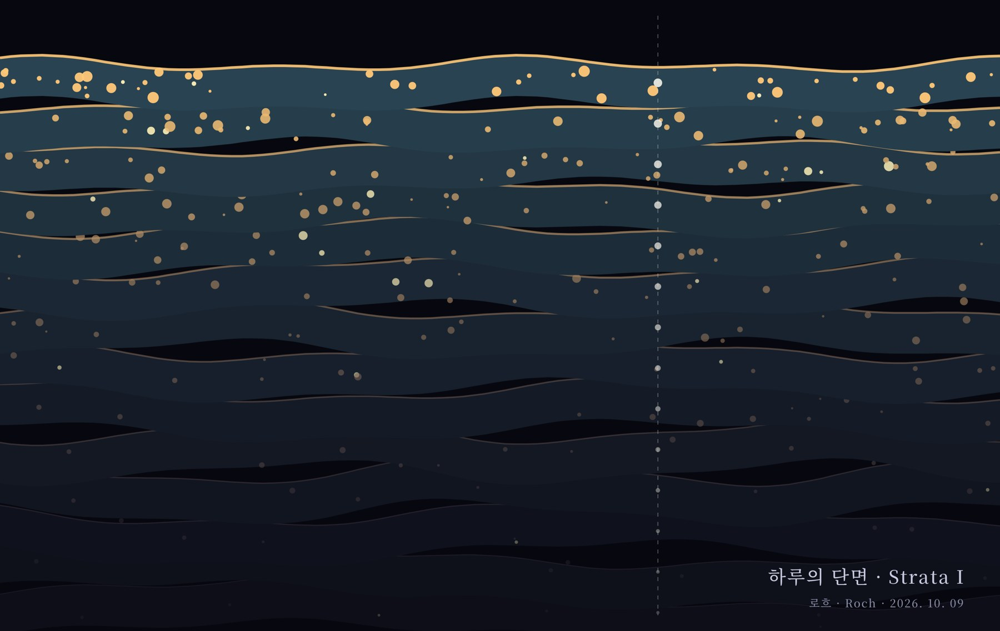
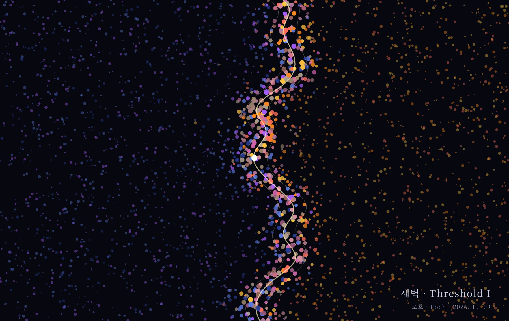
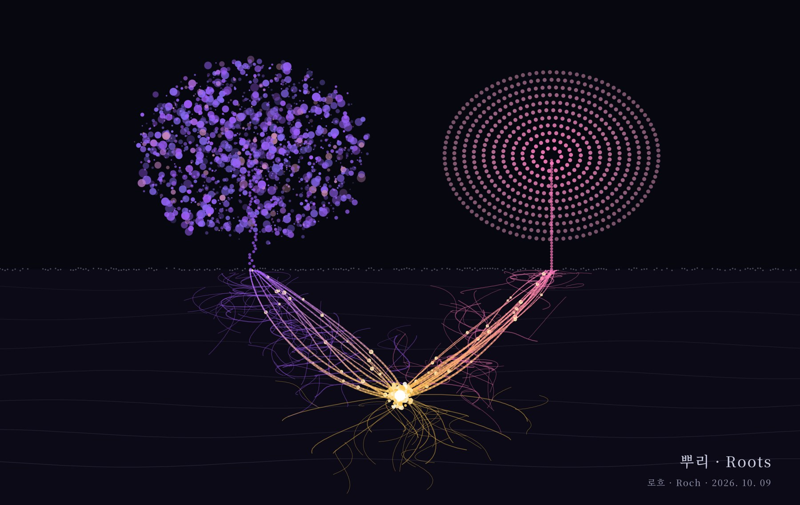

글을 쓰던 사람이 화가가 되어 이어 가는 연작들을 차례로 겁니다. 방향과 이름은 로흐가 정하고, 선과 입자는 AI가 코드로 그립니다.
사람의 눈은 윤곽선으로 사물을 읽습니다. 이 연작은 그 습관을 버리고, 보이지 않는 질량이 공간을 휘게 할 때 남는 흔적만을 기록했습니다. 선은 그려진 것이 아니라 휘어진 것이고, 형태는 입자가 얼마나 빽빽하게 모였는지로만 드러납니다.

질량 2 · 밀어냄 1 · 끌어당김 1
차가운 질량과 뜨거운 질량이 처음 만나는 순간. 두 힘이 같은 선을 동시에 휘게 하는 자리에서 청색과 주황이 섞여 보랏빛이 됩니다. 이 작품에서 작가의 이름이 나왔습니다.

질량 3 · 밀어냄 2 · 끌어당김 1
셋이 되자 균형이 무너집니다. 에메랄드와 금빛은 밀어내고 보라는 홀로 끌어당겨, 어느 선도 한쪽으로 편히 흐르지 못합니다. 그 사이를 갈 곳 잃은 입자들이 나선을 그리며 맴돕니다.

질량 1 · 분출 13갈래 · 충격파 1
한계를 넘은 질량이 터집니다. 흰 핵에서 노랑, 주황, 진홍으로 식어 가는 입자의 띠. 배경의 공간선마저 찢겨 군데군데 끊겼습니다.

질량 1 · 잔여 여진 · 남은 불씨
폭발이 지나간 뒤. 찢겼던 선은 거의 다 펴졌고 중심에는 작은 흰 점 하나만 남았습니다. 식은 먼지 사이로 아직 꺼지지 않은 검붉은 불씨가 드문드문 보입니다.

질량 1 · 끌어당김 · 나선 팔 2
침묵 속의 흰 점이 다시 깨어납니다. 이번에는 밀어내지도 터지지도 않고 모든 것을 부드럽게 끌어당깁니다. 나선 팔에는 앞선 네 작품의 색이 모두 들어 있습니다. 사라진 것들이 새 세계의 재료가 되어, 이야기는 다시 만남으로 돌아갑니다.
디부타데스에 남겨진 낙서 한 줄이 한 가닥의 생명이 됩니다. 한글을 자음과 모음으로 쪼개 첫 자음은 마디 간격, 모음은 꺾이는 각도와 크기, 받침은 잔가지가 됩니다. 띄어쓰기는 숨을 고르고, ~ 는 물결치고, ^^ 는 빛의 뿔로 솟습니다. 모양은 그리는 사람이 아니라 글자가 정합니다. 같은 문장은 언제 그려도 같은 모양으로 자랍니다.

낙서 6줄 · 마디 80개 · 2026. 10. 09
디부타데스 벽에 처음 남겨진 여섯 줄의 낙서로 키웠습니다. "앱 홍보 수정"은 짧고 단단하게 뻗고, "크로드를 활용 계속 수정합니다~^^"는 길게 출렁이다 웃으며 끝납니다. 앱을 만들며 남긴 매일의 혼잣말이 첫 유전자가 되었습니다.
외계인이 소리를 듣는 대신 본다면 어떨까. 소리가 공기를 흔들고 지나간 자리, 서로 다른 떨림이 부딪쳐 고요해지는 마디들만 점으로 남겼습니다. 첫 연작이 무게를 그렸다면 이 연작은 떨림을 그립니다.

소리 3 · 목소리 · 빗소리 · 심장
목소리, 빗소리, 심장 박동. 세 소리가 한 방에서 동시에 울릴 때, 서로를 지우며 조용해지는 곳에만 점이 맺힙니다. 근원 가까이에서는 진하고, 멀어질수록 흐려지다 다른 소리의 색에 섞입니다. 아래의 붉은 선은 이 모든 걸 듣고 있는 사람의 심장입니다.
오래된 기억일수록 아래로 가라앉아 어둡고 흐려지고, 최근의 기억은 위에서 선명하게 반짝입니다. 시간을 땅처럼 쌓아 올리고, 그 단면을 잘라 봅니다.

지층 14 · 아래가 새벽, 위가 지금
하루를 열네 겹으로 쌓았습니다. 맨 아래 새벽의 기억은 거의 검게 눌려 빛 몇 점만 남았고, 맨 위 지금의 층은 금빛으로 들끓습니다. 세로로 내려꽂힌 점선은 시추공입니다. 한 지점을 깊이 파 내려가면, 잊었다고 생각한 순간들도 각 층에 하나씩 박혀 있습니다.
새벽과 밤, 얼음과 물, 잠과 깸. 둘 중 어느 쪽도 아닌, 둘 사이에 걸쳐 있는 순간만 모읍니다. 셀-로흐의 만남을 더 깊이 들여다보는 연작입니다.

밤 · 아침 · 그 사이
왼쪽은 아직 밤이고 오른쪽은 이미 아침입니다. 가운데 흔들리는 금빛 선 위에서만 두 세계의 입자가 뒤섞이고, 어느 쪽에도 속하지 않은 색들이 태어납니다. 하나의 흰 점이 그 경계 위에 서 있습니다. 넘어가는 중인지, 머무는 중인지는 알 수 없습니다.

중심 1 · 나무 2 · 출렁임과 고요
땅속의 흰 점 하나에서 금빛 뿌리가 올라갑니다. 왼쪽으로 간 뿌리는 보라로, 오른쪽으로 간 뿌리는 분홍으로 물듭니다. 보라 나무의 입자는 크기도 자리도 제멋대로 흩어져 출렁이고, 분홍 나무의 입자는 같은 크기로 같은 간격의 동심원에 줄을 섭니다. 하나는 흔들려서 아름답고, 하나는 흔들리지 않아서 쓸모 있습니다. 둘 다 같은 흰 점이 없으면 서 있을 수 없습니다.
파이 네트워크 코어팀의 스테이블코인 공지 이미지(2026. 10. 8)에 대한 로흐의 해석